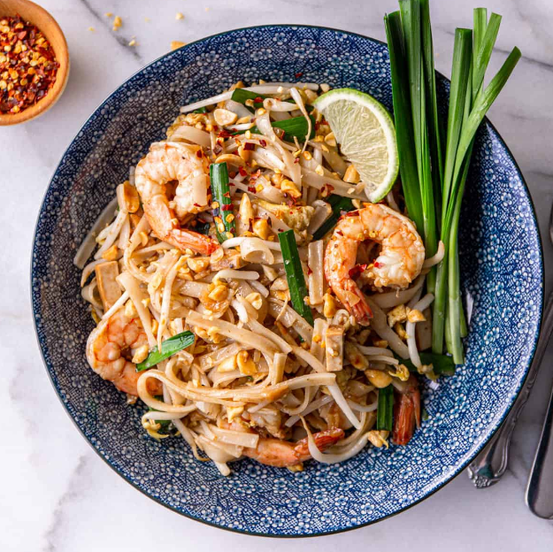

Pad Thai Recipe

Discover the recipe
The authentic version of this iconic Thai noodle dish is made with stir-fried rice noodles coated in a tamarind and fish sauce-based sauce with shrimp, chopped chives, scrambled egg, firm tofu, pickled radish or turnip, and bean sprouts.
Pad Thai is a relatively recent invention in Thailand that only began showing up in the mid-20th century. While rice noodle stir-fries have been made in Thailand for centuries, the combination of flavors unique to Pad Thai are fairly new. Once the dish was exported, its easy-to-love sweet and savory flavor made it one of the most popular Thai dishes around the world.
Ingredients
- 6 ounces Pad Thai rice noodles (sometimes labeled rice stick noodles)
- 1 large egg
- 1 ounce pressed tofu (optional; skip if using tofu as your protein)
- 2 tablespoons pickled or preserved radish or turnip
- 3 cloves garlic
- 4 stalks Chinese chives
- 1/3 cup roasted, unsalted peanuts
- 1 lime
- 1 cup mung bean sprouts (optional)
- 1/3 cup Pad Thai Sauce
- 6 ounces protein of choice (shrimp, thinly sliced chicken, or cubed extra-firm tofu)
- 2 tablespoons vegetable oil
Ready? Just follow these steps...
- Cook the noodles according to the package directions. (Note: Be very careful not to overcook the noodles; they will continue to cook a bit when added to the stir-fry.) If you aren't quite ready to use them, you can soak them in a bowl of cool water until you're ready and drain again before using.
- Prep all other ingredients as follows and set them beside the stove:
- Egg - Whisk the egg.
- Pressed Tofu - Slice into thin, 1-inch long strips.
- Pickled Radish / Turnip - If using slated radish or turnip, rinse it first to remove the salt. Finely chop.
- Garlic - Mince.
- Chinese chives - Chop the top half (green parts) of each stalk into 1-inch lengths. Reserve the bottom halves for garnish.
- Peanuts - Roughly chop and divide in half. Set half aside to serve as a garnish.
- Lime - Slice into wedges.
- Place a wok or large nonstick pan over medium-high heat.
- Add 1 Tablespoon of oil and when it begins to shimmer, add the protein. Cook the protein on both sides until it is browned on the outside but not cooked all the way through, about 1 minute per side for shrimp, 2 minutes per side for chicken, 3 minutes per side for tofu. Add 2 Tablespoons of Pad Thai Sauce and cook until it coats the protein. Move the protein to the side of the pan.
- In the open half of the pan, add another Tablespoon of oil and then the egg. Scramble the egg until nearly cooked through, about 2 minutes.
- Add the noodles, pressed tofu, pickled radish / turnip, garlic, and remaining Pad Thai Sauce to the pan and gently fold everything together until the noodles are heated through and everything is coated in sauce.
- Turn off the heat and stir in the Chinese chives, peanuts, and bean sprouts. Squeeze juice from one of the lime wedges over the top of the noodles.
- Transfer to serving plates and top with more peanuts and the reserved Chinese chive stems. Serve immediately with all of the garnishes listed above, so that everyone can adjust to their taste at the table.
- Serve white sugar, fish sauce, and red pepper flakes on the side so that everyone can customizer their dish if they'd like.
Congrats, you've just made Pad Thai for 2! Enjoy!